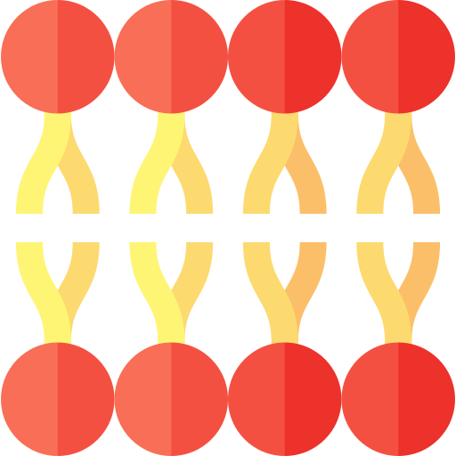

No todo es inorgánica

El mundo de la química es muy interesante y diverso. Ya habrás oído hablar de la llamada química inorgánica pero... ¡no todo es lo que parece!
En esta unidad haremos un pequeño recorrido hasta poder llegar a nuestro producto final, cuya descripción puede consultarse en este documento. Existen distintos centros de interés, entre lo que podemos destacar Escuela 4.0 o STEAM.
Además, existe una serie de contenido que servirá de ayuda tanto al profesorado como al alumnado.
Antes de empezar esta nueva aventura veamos juntos que ideas previas tenemos.
¿Orgánica o inorgánica?
Veamos, veamos... La primera actividad de esta unidad consiste en realizar un pequeño kahoot entre todos, titulado ¿Orgánica o inorgánica?
¡Únete y veamos que ideas te rondan la cabeza!
Al terminar realizaremos un pequeño debate para comentar las preguntas y las diferentes opciones propuestas.
La química orgánica es una rama de la Química que estudia sustancias y compuestos orgánicos, que son las que están basadas en el carbono.
El carbono es capaz de formar enlaces covalentes con otros elementos o con él mismo.
Algunos de los compuestos orgánicos que pueden sonarte son las proteínas o los lípidos.
'Haciendo match' con una biomolécula
El producto final de este paseo por la química orgánica, consistirá en elaborar un vídeo estilo TikTok o reel de Instagram para el que irás obteniendo información conforme avances.
Tu primera tarea consiste en investigar sobre las biomoléculas y elegir una para centrarte en ella durante todo el tema. Puedes pedir ayuda a tu profesor/a, pero existe mucha información relevante que encontrar. Recuerda siempre que las búsquedas deben ser seguras, la información debe estar contrastada y todo el material que utilicemos bien referenciado.

Para ayudarte te dejo una infografía con datos importantes para tu tarea. ¡Qué empiece la búsqueda!